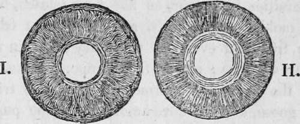

The Sense Of Sight. Part 2
Description
This section is from the book "Human Physiology For The Use Of Elementary Schools", by Charles Alfred Lee. Also available from Amazon: Human Physiology, for the Use of Elementary Schools.
The Sense Of Sight. Part 2
* Retina, a net.
7. The minuteness with which objects are painted on the retina is indeed wonderful. Standing on an eminence, the eye takes in a landscape of hundreds of miles in extent; and all this is painted on the retina, though, as an:English writer calculates, a portion of the castle of Edinburgh, 500 feet long and 90 feet high, occupies on the retina only the twelve hundred thousandth part of an inch, when seen at a certain distance. " A whole printed sheet of newspaper," says Arnott, " may be represented on the retina on less surface than that of a finger nail, and yet not only shall every word and letter be separately perceivable, but even any imperfection of a single letter ; or, more wonderful still, when at night an eye is turned up to the blue vault of heaven, there is portrayed on the little concave of the retina, the boundless concave of the sky, with every object in its just proportions. There a moon in beautiful miniature may be sailing among her white edged clouds, and surrounded by a thousand twinkling stars, so that to an animalcule, supposed to be within and near the pupil, the retina might appear another starry firmament with all its glory. If the images in the human eye be thus minute, what must they be in the little eye of a canary bird, or of another animal smaller still! How wonderful are the works of nature !"
8. The Cornea is the term applied to the anterior transparent portion of the ball. It resembles a watch crystal in shape, and it is received into a groove in the sclerotic coat, in the same manner as a watch glass is received into its case, as in this cut. It is somewhat thicker than the sclerotic coat, and is composed of six concentric plates ; but its bloodvessels are so small, that they exclude the red particles altogether, and admit nothing but serum. Under the first plate, little glands are found, perceptible only by aid of the microscope, which are supposed to secrete an oil which gives the eye its bright, sparkling appearance. In the last stage of life, we find this fluid forming a thin pellicle over the cornea. What is called the ciliary ligament, is the groove or circle, where the cornea is inserted in the sclerotic coat.
9. We find the tunics just described in the lower grades of animals, as well as in man, differing of course in form, density, etc, but always fitted to the circumstances of the animal. Thus in soft, molluscous animals, the defensive coats of the eye are soft also ; but then their eyes are placed on ten tacula, or feelers, so that they can retract them within their shells. In the articulata, as insects, the coverings of the eye are firmer, and of a horny consistence. In the Crustacea, such as crabs, lobsters, etc, the eyes are set in short bony cylinders, and the cornea is often covered merely by a portion of skin, which passes over it. In fishes, we see the cornea flat, on account of the absence of the aqueous humour. In birds, the cornea is conical, corresponding with the quantity of aqueous humour ; and it is more prominent in rapacious birds, such as the hawk, eagle, and kite, than in aquatic birds. It is remarkable that the sclerotica in birds consists of three different layers, the middle one of which is bone, and composed of several plates, overlapping each other ; designed doubtless to protect their eyes against each other's sharp pointed bills, which they have to encounter in their attacks. In the higher animals, the coverings of the eye are similar to those of man.
10. The Iris, is a circular membrane, which hangs sus pended like a curtain in the aqueous humour, and is attached to one of the coats of the eye at its circumference. It derives its name iris, or rainbow, from the various colours it has in different individuals, such as dark brown, or black, light grey, olue, and several shades and combinations of these. It is on this alone that the colour of the eye depends. The colour depends indeed on the refraction of the light, as it falls on the fleecy or velvet like surface of the membrane, and also upon the degree in which the black paint which covers its back is seen through it; according as the iris is more or less transparent, will the " colour of the eye" be lighter or darker.
11. In many of the lower animals, especially birds, the iris assumes a still greater variety of colours. The round hole in the centre of the iris is called the pupil, and it is the dark pigment of the choroid coat, that we see through this when we look into the eye of another. Aitkin says that this name has been given to it, from the fact that when we look into the eye, we see a small image of our own face, like a very minute child or pupil. In albinos, and in animals that see best in the dark, like owls, the dark pigment is wanting not only on the choroid coat, but also on this membrane, and as these parts are very vascular, the blood is seen imparting a red colour to the eye.
12. The iris has the power of dilating or contracting in order to admit more or less light according as it is needed. This is effected by muscular fibres. Of these, there are two kinds. The first set converge from the circumference of the iris to the circular margin of the pupil, and are called the radiated muscles. When these contract they dilate the pupil. The other set is composed of circular fibres which go round the border, and indeed, form the pupil; these are called the orbicular muscle; and when they contract diminish the size of the pupil. Now, when more light enters the eye than is wanted, the excited retina immediately gives warning of the danger, and the nerves which are plentifully distributed to the iris, stimulate the orbicular muscle to contract, and the radiated one to relax, by which means the size of the pupil is instantly lessened. On the contrary, when in the dark or twilight, more light is needed, to transmit a distinct image of objects to the brain, the orbicular muscle relaxes, and the radiated one contracts, so as to enlarge the pupil to its full extent. Between these two muscles is a middle layer, composed of a net work of blood vessels and nerves.
Fig. 4. The cut marked I. represents the iris magnified as seen from the front, showing the radiated muscle.
Cut II. is a back view of the same showing the orbicular muscle.
Continue to:
Tags
humans, anatomy, skeleton, bones, physiology, organs, nerves, brain